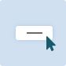

ボタンパターン
このパターンについて
ボタンは、フォームの送信、ダイアログの開閉、アクションのキャンセル、削除操作の実行など、利用者によるアクションやイベントをトリガするウィジェットです。 ボタンがダイアログを起動することを利用者に知らせる一般的な慣例は、ボタンのラベルに「…」（省略記号）を追加することです。例：「名前を付けて保存…」。
通常のボタンウィジェットに加えて、WAI-ARIA は他の 2 種類のボタンをサポートしています。
- トグルボタン: オフ（押されていない）又はオン（押されている）のいずれかの 2 状態ボタンです。 ボタンがトグルボタンであることを支援技術に伝えるには、aria-pressed 属性の値を指定します。 たとえば、オーディオプレーヤーのミュートとラベル付けされたボタンは、aria-pressed の状態を true に設定することで、サウンドがミュートされていることを示すことができます。 重要: トグルの状態が変化しても、ラベルが変化しないことが重要です。 この例では、押された状態が true の場合でもラベルは「ミュート」のままであるため、スクリーンリーダーは「ミュートトグルボタンが押されました」のように読み上げます。 あるいは、ボタンのラベルが「ミュート」から「ミュート解除」に変化するようにデザインされている場合、aria-pressed 属性は必要ありません。
- メニューボタン: メニューボタンパターンで説明されているように、aria-haspopup プロパティが
menu又はtrueに設定されている場合、ボタンは支援技術にメニューボタンとして提示されます。
注記
ボタンによって実行されるアクションの種類は、リンクの機能（リンクパターンを参照）とは明確に異なります。
ウィジェットの外観とロールの両方が、提供する機能と一致することが重要です。
それにもかかわらず、要素は時折、リンクの視覚スタイルを持ちながら、ボタンのアクションを実行することがあります。
そのような場合、要素に button ロールを与えることは、支援技術利用者が要素の機能を理解するのに役立ちます。
ただし、より良い解決策は、機能と ARIA ロールに一致するように視覚デザインを調整することです。

例
- ボタンの例: アクセシブルなコマンドボタン及びトグルボタンにされたクリック可能な HTML
div及びspan要素の例。 -
ボタンの例（IDL バージョン）: アクセシブルなコマンドボタン及びトグルボタンにされたクリック可能な HTML
div及びspan要素の例。 この例では、IDL インターフェースを使用しています。
キーボード操作
ボタンにフォーカスがある場合:
- Space: ボタンを動作させる。
- Enter: ボタンを動作させる。
-
ボタンの動作後、フォーカスはボタンが実行するアクションの種類に応じて設定されます。例:
- ボタンを動作させるとダイアログが開く場合、フォーカスはダイアログ内に移動します。 （ダイアログパターンを参照）
- ボタンを動作させるとダイアログが閉じる場合、ダイアログのコンテキストで実行された機能が論理的に異なる要素につながる場合を除き、フォーカスは通常、ダイアログを開いたボタンに戻ります。 たとえば、ダイアログでキャンセルボタンを動作させると、フォーカスはダイアログを開いたボタンに戻ります。 ただし、ダイアログが開かれたページを削除するアクションを確認している場合、フォーカスは論理的に新しいコンテキストに移動します。
- ボタンを動作させても現在のコンテキストが閉じない場合、通常、動作後もフォーカスはボタンに残ります。例：適用ボタン又は再計算ボタン。
- ボタンのアクションが、ウィザードの次のステップへの移動や別の検索条件の追加など、コンテキストの変化を示す場合、そのアクションの開始点にフォーカスを移動するのが適切な場合が多いです。
- ショートカットキーでボタンを動作させた場合、フォーカスは通常、ショートカットキーを動作させたコンテキストに残ります。 たとえば、リスト内の現在フォーカスされている項目をリスト内で 1 つ上の位置に移動する「上へ」ボタンに Alt + U が割り当てられている場合、リストにフォーカスがあるときに Alt + U を押しても、リストからフォーカスは移動しません。
WAI-ARIA ロール、ステート、及びプロパティ
- ボタンは button のロールを持ちます。
-
buttonはアクセシブルなラベルを持ちます。 デフォルトでは、アクセシブルネームはボタン要素内のテキストコンテンツから算出されます。 ただし、aria-labelledby 又は aria-label を使用して提供することもできます。 - ボタンの機能の説明が存在する場合、説明を含む要素の ID を ボタン要素の aria-describedby に設定します。
- ボタンに関連付けられたアクションが利用できない場合、ボタンの aria-disabled を
trueに設定します。 -
ボタンがトグルボタンの場合、aria-pressed ステートを持ちます。
ボタンがオンに切り替えられた場合、このステートの値は
trueであり、オフに切り替えられた場合、ステートはfalseです。